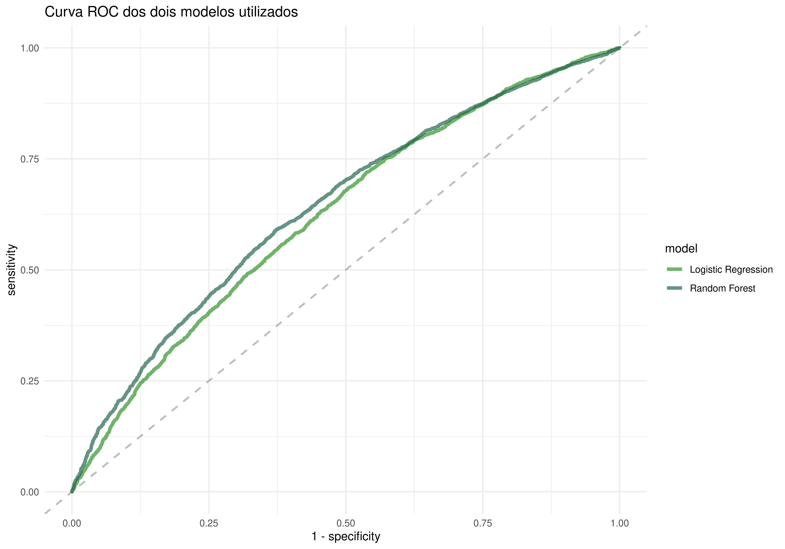

Etapa 2 e 3
As etapas 2 e 3 foram destinadas para modelagem. O problema escolhido foi o de predizer o desempenho dos estudantes nas avaliações finais e além disso, o candidato deve avaliar a qualidade e precisão do modelo.
No entanto algumas ressalvas precisam ser feitas: em relação a task pedida, a documentação da OU (Open University) e a integridade dos dados.
As avaliações finais no dataset correspondem a classe “Exam”, presente na variável assessment_type. No entanto, possuímos muitos valores missing nesta variável e sua importância para composição da nota final é muitas vezes dúbia. Isso por que encontramos estudantes que pontuaram 0 no Exam e ainda assim foram aprovados, assim como estudantes que não fizeram o teste e foram aprovados do mesmo jeito.
Isso por que as avaliações finais servem para compor sua nota final, valor esse que de fato vai indicar se o estudante foi aprovado ou não no curso. E essa composição não é dita na documentação dos dados, e é pouco provável de ser encontrada apenas pela análise dos dados atuais.
Tem mais um ponto que precisa ser comentado, ao pensar em utilizar as notas individuais em cada avaliação encontrei outro problema. Alguns cursos zeraram os pesos de cada teste, gerando assim mais incosistências em relação a correlação de quem foi aprovado ou não e seu desempenho.
Libs
Abaixo você encontra os pacotes utilizados para esta etapa do case.
Procedimento adotado
Diante ao que foi dito, o procedimento adotado aqui foi o de retirar os valores missings da variável assessment_type e trabalhar com as informações que sobrarem. Sendo que essa é nossa variável target, não faria sentido utilizar nenhum método de imputação nela.
Para obter o dataset para modelagem precisamos realizar uma série de joins entre as tableas disponíveis, para que cada observação dos dados fosse composta por um estudante de um determinado período e curso diferente.
# obtendo o dataset para modelagem
# primeira parte: dados apenas sobre as avaliações finais (Exam)
final_score_exam_tbl <- student_info %>%
# coletando pesos e ids das avaliações
left_join(assessments, by = c("code_module", "code_presentation")) %>%
select(-gender:-disability, -date) %>%
# coletando as notas individuais dos estudantes
left_join(student_assessment, by = c("id_student", "id_assessment")) %>%
mutate(weighted = (weight/100) * score) %>%
filter(assessment_type == "Exam") %>%
drop_na(score) %>%
group_by(code_module, code_presentation, id_student, final_result) %>%
summarise(final_score_exam = sum(weighted)) %>%
ungroup()## `summarise()` regrouping output by 'code_module', 'code_presentation', 'id_student' (override with `.groups` argument)# segunda parte: join dos dados sobre as avaliações finais com o dataset base (student_info)
exam_info_tbl <- student_info %>%
left_join(final_score_exam_tbl, by = c("code_module", "code_presentation", "id_student")) %>%
select(-final_result.y) %>%
rename(final_result = final_result.x) %>%
drop_na(final_score_exam)| code_module | code_presentation | id_student | gender | region | highest_education | imd_band | age_band | num_of_prev_attempts | studied_credits | disability | final_result | final_score_exam |
|---|---|---|---|---|---|---|---|---|---|---|---|---|
| Curso C | 2014B | 29764 | M | East Anglian Region | A Level or Equivalent | 50-60% | 0-35 | 0 | 90 | N | Distinction | 94 |
| Curso C | 2014B | 29820 | M | East Anglian Region | HE Qualification | 40-50% | 0-35 | 0 | 60 | N | Pass | 76 |
| Curso C | 2014B | 40604 | M | Ireland | A Level or Equivalent | NA | 35-55 | 0 | 30 | N | Pass | 66 |
| Curso C | 2014B | 42638 | M | Scotland | HE Qualification | 90-100% | 35-55 | 0 | 60 | N | Pass | 50 |
| Curso C | 2014B | 46605 | M | East Anglian Region | HE Qualification | 60-70% | 35-55 | 0 | 60 | N | Distinction | 98 |
| Curso C | 2014B | 49119 | M | Ireland | HE Qualification | NA | 0-35 | 0 | 90 | N | Distinction | 100 |
Algumas variáveis não fazem sentido serem adicionadas para treino do modelo, pois não são informações previamente disponíveis para cada estudante, ou seja, elas aconteceram apenas no futuro e portanto não tem como serem usadas como preditoras. Por conta disso, iremos dropar algumas features.
Meu intuito inicial era realizar a previsão do desempenho por curso, porém, como temos poucos dados fica inviável tal abordagem.
Como nosso dataset é predominantemente categórico, é super interessante observar como está a distribuição das diferentes classes. Para isso eu criei uma função que nos permite visualizar todas as features com apenas um comando.
plot_all_full_data <- function(name = "region") {
exam_info_v2_tbl %>%
count(.data[[name]]) %>%
mutate(prop = n/sum(n)) %>%
ggplot(aes(y = fct_reorder(.data[[name]], prop),
x = prop)) +
geom_segment(aes(xend = 0, yend = .data[[name]]),
show.legend = F) +
geom_point(aes(size = prop),
show.legend = F) +
geom_label(aes(label = prop %>% scales::number(accuracy = .01), size = prop*50),
fill = "white",
hjust = "inward",
show.legend = F) +
theme_minimal() +
labs(
y = name
)
}
names <- names(exam_info_v2_tbl %>% select(where(is.character)))
all_plots <- map(names, .f = plot_all_full_data)
cowplot::plot_grid(plotlist = all_plots)
Vimos aqui que algumas classes são bem desiquilibradas e isso pode ser um problema para nossa previsão. Por enquanto seguiremos desta forma para criação de um modelo baseline.
Além disso, a variável imd_band possui alguns valores missing. Por enquanto a mesma não será considerada.
exam_info_final_tbl <- exam_info_v2_tbl %>% select(-imd_band)
kbl(exam_info_final_tbl %>% head()) %>%
kable_paper("striped") %>%
scroll_box(width = "100%")| code_module | code_presentation | id_student | gender | region | highest_education | age_band | num_of_prev_attempts | disability | final_score_exam |
|---|---|---|---|---|---|---|---|---|---|
| Curso C | 2014B | 29764 | M | East Anglian Region | A Level or Equivalent | 0-35 | 0 | N | 94 |
| Curso C | 2014B | 29820 | M | East Anglian Region | HE Qualification | 0-35 | 0 | N | 76 |
| Curso C | 2014B | 40604 | M | Ireland | A Level or Equivalent | 35-55 | 0 | N | 66 |
| Curso C | 2014B | 42638 | M | Scotland | HE Qualification | 35-55 | 0 | N | 50 |
| Curso C | 2014B | 46605 | M | East Anglian Region | HE Qualification | 35-55 | 0 | N | 98 |
| Curso C | 2014B | 49119 | M | Ireland | HE Qualification | 0-35 | 0 | N | 100 |
Sendo assim, nosso dataset que será utilizado para as previsões é o exam_info_final_tbl.
Split de treino e teste
Precisamos dividir nossos dados entre treino e teste. Um problema que pode ocorrer aqui é das classes ficarem com distribuições diferentes, ou ainda classes de pouca ocorrência ficarem fora de algum conjunto de dado. A função initial_split() possui uma forma de auxiliar nessa tarefa, o parâmetro strata, este serve para indicar qual variável irá manter a proporção de classes na hora do split.
Nesse caso eu optei pela variável highest_education por conter algumas classes com pouquísimos valores.
set.seed(1234)
splits <- initial_split(prop = .7, strata = "highest_education", data = exam_info_final_tbl)
train <- training(splits)
test <- testing(splits)Vamos checar novamente as distribuições.
plot_all_full_train <- function(name = "region") {
train %>%
count(.data[[name]]) %>%
mutate(prop = n/sum(n)) %>%
ggplot(aes(y = fct_reorder(.data[[name]], prop),
x = prop)) +
geom_segment(aes(xend = 0, yend = .data[[name]]),
show.legend = F) +
geom_point(aes(size = prop),
show.legend = F) +
geom_label(aes(label = prop %>% scales::number(accuracy = .01), size = prop*50),
fill = "white",
hjust = "inward",
show.legend = F) +
theme_minimal() +
labs(
y = name
)
}
names <- names(train %>% select(where(is.character)))
all_plots <- map(names, plot_all_full_train)
cowplot::plot_grid(plotlist = all_plots)
plot_all_full_test <- function(name = "region") {
test %>%
count(.data[[name]]) %>%
mutate(prop = n/sum(n)) %>%
ggplot(aes(y = fct_reorder(.data[[name]], prop),
x = prop)) +
geom_segment(aes(xend = 0, yend = .data[[name]]),
show.legend = F) +
geom_point(aes(size = prop),
show.legend = F) +
geom_label(aes(label = prop %>% scales::number(accuracy = .01), size = prop*50),
fill = "white",
hjust = "inward",
show.legend = F) +
theme_minimal() +
labs(
y = name
)
}
names <- names(test %>% select(where(is.character)))
all_plots <- map(names, plot_all_full_test)
cowplot::plot_grid(plotlist = all_plots)Visualizamos que em ambos os casos as proporções foram mantidas, o que é importante para generalização do modelo.
Recipe
As etapas de pré-processamento serão feitas utilizando o pacote recipes. Onde cada step é responsável por uma transformação.
Optei por utilizar o one hot encoder em praticamente todas as variáveis categóricas, com excessão da age_band que é uma variável ordinal e pode apenas ser utilizada como fator.
recipe_spec <- recipe(final_score_exam ~ ., data = train) %>%
update_role(code_module, code_presentation, id_student, new_role = "indicator") %>%
step_string2factor(age_band, levels = c("0-35", "35-55", "55<=")) %>%
step_dummy(all_predictors(), -num_of_prev_attempts, -age_band, one_hot = T)
kbl(recipe_spec %>% prep() %>% juice() %>% head()) %>%
kable_paper("striped") %>%
scroll_box(width = "100%")| code_module | code_presentation | id_student | age_band | num_of_prev_attempts | final_score_exam | gender_F | gender_M | region_East.Anglian.Region | region_East.Midlands.Region | region_Ireland | region_London.Region | region_North.Region | region_North.Western.Region | region_Scotland | region_South.East.Region | region_South.Region | region_South.West.Region | region_Wales | region_West.Midlands.Region | region_Yorkshire.Region | highest_education_A.Level.or.Equivalent | highest_education_HE.Qualification | highest_education_Lower.Than.A.Level | highest_education_No.Formal.quals | highest_education_Post.Graduate.Qualification | disability_N | disability_Y |
|---|---|---|---|---|---|---|---|---|---|---|---|---|---|---|---|---|---|---|---|---|---|---|---|---|---|---|---|
| Curso C | 2014B | 29764 | 0-35 | 0 | 94 | 0 | 1 | 1 | 0 | 0 | 0 | 0 | 0 | 0 | 0 | 0 | 0 | 0 | 0 | 0 | 1 | 0 | 0 | 0 | 0 | 1 | 0 |
| Curso C | 2014B | 29820 | 0-35 | 0 | 76 | 0 | 1 | 1 | 0 | 0 | 0 | 0 | 0 | 0 | 0 | 0 | 0 | 0 | 0 | 0 | 0 | 1 | 0 | 0 | 0 | 1 | 0 |
| Curso C | 2014B | 40604 | 35-55 | 0 | 66 | 0 | 1 | 0 | 0 | 1 | 0 | 0 | 0 | 0 | 0 | 0 | 0 | 0 | 0 | 0 | 1 | 0 | 0 | 0 | 0 | 1 | 0 |
| Curso C | 2014B | 42638 | 35-55 | 0 | 50 | 0 | 1 | 0 | 0 | 0 | 0 | 0 | 0 | 1 | 0 | 0 | 0 | 0 | 0 | 0 | 0 | 1 | 0 | 0 | 0 | 1 | 0 |
| Curso C | 2014B | 46605 | 35-55 | 0 | 98 | 0 | 1 | 1 | 0 | 0 | 0 | 0 | 0 | 0 | 0 | 0 | 0 | 0 | 0 | 0 | 0 | 1 | 0 | 0 | 0 | 1 | 0 |
| Curso C | 2014B | 57340 | 0-35 | 0 | 68 | 1 | 0 | 1 | 0 | 0 | 0 | 0 | 0 | 0 | 0 | 0 | 0 | 0 | 0 | 0 | 1 | 0 | 0 | 0 | 0 | 1 | 0 |
Explicação dos steps:
- update_role: cria uma especificação para algumas variáveis que não serão utilizadas como preditores mas terão um papel de identificação.
- step_string2factor: conversão de variáveis categóricas para fator
- step_dummy: aplicação do one-hot-encoding
Model
Na etapa anterior nós criamos especificações de pré-processamento, nessa nós criaremos especificações dos modelos.
Worflow
No worflow você coloca tudo junto (modelo e receita).
# 1 - workflow random forest
wf_rf_spec <- workflow() %>%
add_recipe(recipe_spec) %>%
add_model(rf_spec)
# 2 - workflow linear regression
wf_lm_spec <- wf_rf_spec %>% update_model(lm_spec)
# objetos workflow
wf_rf_spec## ══ Workflow ═════════════════════════════════════════════════════════════════════════════════════════════════════════════════════════════════════
## Preprocessor: Recipe
## Model: rand_forest()
##
## ── Preprocessor ─────────────────────────────────────────────────────────────────────────────────────────────────────────────────────────────────
## 2 Recipe Steps
##
## ● step_string2factor()
## ● step_dummy()
##
## ── Model ────────────────────────────────────────────────────────────────────────────────────────────────────────────────────────────────────────
## Random Forest Model Specification (regression)
##
## Computational engine: ranger## ══ Workflow ═════════════════════════════════════════════════════════════════════════════════════════════════════════════════════════════════════
## Preprocessor: Recipe
## Model: linear_reg()
##
## ── Preprocessor ─────────────────────────────────────────────────────────────────────────────────────────────────────────────────────────────────
## 2 Recipe Steps
##
## ● step_string2factor()
## ● step_dummy()
##
## ── Model ────────────────────────────────────────────────────────────────────────────────────────────────────────────────────────────────────────
## Linear Regression Model Specification (regression)
##
## Computational engine: lmFit
No fit é onde de fato todas as especificações passadas são aplicadas e treinadas nos dados de treino.
Predict
Aqui vamos realizar as previsões e salvar os resultados dos dois modelos em uma nova tabela.
results_treino <- fitted_rf_wf %>%
predict(new_data = train) %>%
mutate(valor_real = train$final_score_exam,
model = "rf") %>%
bind_rows(fitted_lm_wf %>%
predict(new_data = train) %>%
mutate(valor_real = train$final_score_exam,
model = "lm"))## Warning in predict.lm(object = object$fit, newdata = new_data, type = "response"): prediction from a rank-deficient fit may be misleadingresults_test <- fitted_rf_wf %>%
predict(new_data = test) %>%
mutate(valor_real = test$final_score_exam,
model = "rf") %>%
bind_rows(fitted_lm_wf %>%
predict(new_data = test) %>%
mutate(valor_real = test$final_score_exam,
model = "lm"))## Warning in predict.lm(object = object$fit, newdata = new_data, type = "response"): prediction from a rank-deficient fit may be misleading## # A tibble: 2 x 4
## model .metric .estimator .estimate
## <chr> <chr> <chr> <dbl>
## 1 lm rmse standard 19.9
## 2 rf rmse standard 20.0## # A tibble: 2 x 4
## model .metric .estimator .estimate
## <chr> <chr> <chr> <dbl>
## 1 lm rmse standard 19.8
## 2 rf rmse standard 19.0Vemos que os dois modelos possuem valores bem próximos do RMSE, quase 19.8 e 19.9. Podemos então visualizar o resultado dos valores preditos vs valores reais.
results_test %>%
#filter(model == "rf") %>%
mutate(task = "Testing") %>%
bind_rows(results_treino %>%
mutate(task = "Training")) %>%
ggplot(aes(valor_real, .pred, color = model)) +
geom_abline(lty = 2, color = "gray80", size = 1.5) +
geom_point(alpha = 0.5) +
scale_color_manual(values = c("#012623", "#04BF68")) +
facet_wrap(~task) +
labs(
x = "Valor Real",
y = "Performance Predita",
color = "Tipo de modelo",
title = "Valores reais vs valores observados nas previsões"
) +
theme_minimal()
Pelo gráfico dos resíduos vemos que os dois modelos tiveram resultados bem próximos, tanto nos dados de treino quanto nos dados de teste. O ideal formato desse gráfico é que os pontos estejam o mais próximo possível de uma linha reta, porém nossos resultados não foram muito bons, ainda existe muita variância para ser explicada pelo modelo.
Podemos aplicar uma técnica de resampling para investigar como o modelo se comporta em diferentes dados de validação.
# apenas nos dados de treino
# mantendo a proporção do split inicial
set.seed(1234)
score_folds <- vfold_cv(train, strata = "highest_education", v = 5)
rf_res <- fit_resamples(
wf_rf_spec,
score_folds,
control = control_resamples(save_pred = TRUE, verbose = T)
)## i Fold1: preprocessor 1/1## ✓ Fold1: preprocessor 1/1## i Fold1: preprocessor 1/1, model 1/1## ✓ Fold1: preprocessor 1/1, model 1/1## i Fold1: preprocessor 1/1, model 1/1 (predictions)## i Fold2: preprocessor 1/1## ✓ Fold2: preprocessor 1/1## i Fold2: preprocessor 1/1, model 1/1## ✓ Fold2: preprocessor 1/1, model 1/1## i Fold2: preprocessor 1/1, model 1/1 (predictions)## i Fold3: preprocessor 1/1## ✓ Fold3: preprocessor 1/1## i Fold3: preprocessor 1/1, model 1/1## ✓ Fold3: preprocessor 1/1, model 1/1## i Fold3: preprocessor 1/1, model 1/1 (predictions)## i Fold4: preprocessor 1/1## ✓ Fold4: preprocessor 1/1## i Fold4: preprocessor 1/1, model 1/1## ✓ Fold4: preprocessor 1/1, model 1/1## i Fold4: preprocessor 1/1, model 1/1 (predictions)## i Fold5: preprocessor 1/1## ✓ Fold5: preprocessor 1/1## i Fold5: preprocessor 1/1, model 1/1## ✓ Fold5: preprocessor 1/1, model 1/1## i Fold5: preprocessor 1/1, model 1/1 (predictions)## # A tibble: 2 x 6
## .metric .estimator mean n std_err .config
## <chr> <chr> <dbl> <int> <dbl> <chr>
## 1 rmse standard 20.0 5 0.214 Preprocessor1_Model1
## 2 rsq standard 0.0552 5 0.00896 Preprocessor1_Model1## # A tibble: 1 x 6
## .metric .estimator mean n std_err .config
## <chr> <chr> <dbl> <int> <dbl> <chr>
## 1 rmse standard 20.0 5 0.214 Preprocessor1_Model1O melhor RMSE considerando a média dos 5 conjuntos de dados de validação foi de 20.1, o que é um valor um pouco maior do que quando considerado apenas os dados de treino. A explicação é que na técnica de resampling você acaba reduzindo ainda mais os dados para ser possível treinar em uma parte e investigar a performance em outra, e como os dados já eram poucos fica mais difícil de capturar algum padrão nos dados.
tunning
O Random Forest é um algorítmo que possui alguns parâmetros que podem ser otimizados em cada resample no intuito de otimizar alguma métrica, essa técnica é conhecida como tunning dos parâmetros.
# aumentando os folds para 10
set.seed(1234)
score_folds <- vfold_cv(train, strata = "highest_education", v = 10)
# tunning
model_spec_rf_tune <- rand_forest(
mode = "regression",
mtry = tune(),
trees = tune(),
min_n = tune()
) %>%
set_engine("ranger")
wflw_spec_rf_tune <- workflow() %>%
add_model(model_spec_rf_tune) %>%
add_recipe(recipe_spec)
# tuning
library(tictoc)
tic()
set.seed(123)
tune_results_rf <- wflw_spec_rf_tune %>%
tune_grid(
resamples = score_folds,
grid = 5,
control = control_grid(verbose = TRUE, allow_par = TRUE)
)## i Creating pre-processing data to finalize unknown parameter: mtry## i Fold01: preprocessor 1/1## ✓ Fold01: preprocessor 1/1## i Fold01: preprocessor 1/1, model 1/5## ✓ Fold01: preprocessor 1/1, model 1/5## i Fold01: preprocessor 1/1, model 1/5 (predictions)## i Fold01: preprocessor 1/1, model 2/5## ✓ Fold01: preprocessor 1/1, model 2/5## i Fold01: preprocessor 1/1, model 2/5 (predictions)## i Fold01: preprocessor 1/1, model 3/5## ✓ Fold01: preprocessor 1/1, model 3/5## i Fold01: preprocessor 1/1, model 3/5 (predictions)## i Fold01: preprocessor 1/1, model 4/5## ✓ Fold01: preprocessor 1/1, model 4/5## i Fold01: preprocessor 1/1, model 4/5 (predictions)## i Fold01: preprocessor 1/1, model 5/5## ✓ Fold01: preprocessor 1/1, model 5/5## i Fold01: preprocessor 1/1, model 5/5 (predictions)## i Fold02: preprocessor 1/1## ✓ Fold02: preprocessor 1/1## i Fold02: preprocessor 1/1, model 1/5## ✓ Fold02: preprocessor 1/1, model 1/5## i Fold02: preprocessor 1/1, model 1/5 (predictions)## i Fold02: preprocessor 1/1, model 2/5## ✓ Fold02: preprocessor 1/1, model 2/5## i Fold02: preprocessor 1/1, model 2/5 (predictions)## i Fold02: preprocessor 1/1, model 3/5## ✓ Fold02: preprocessor 1/1, model 3/5## i Fold02: preprocessor 1/1, model 3/5 (predictions)## i Fold02: preprocessor 1/1, model 4/5## ✓ Fold02: preprocessor 1/1, model 4/5## i Fold02: preprocessor 1/1, model 4/5 (predictions)## i Fold02: preprocessor 1/1, model 5/5## ✓ Fold02: preprocessor 1/1, model 5/5## i Fold02: preprocessor 1/1, model 5/5 (predictions)## i Fold03: preprocessor 1/1## ✓ Fold03: preprocessor 1/1## i Fold03: preprocessor 1/1, model 1/5## ✓ Fold03: preprocessor 1/1, model 1/5## i Fold03: preprocessor 1/1, model 1/5 (predictions)## i Fold03: preprocessor 1/1, model 2/5## ✓ Fold03: preprocessor 1/1, model 2/5## i Fold03: preprocessor 1/1, model 2/5 (predictions)## i Fold03: preprocessor 1/1, model 3/5## ✓ Fold03: preprocessor 1/1, model 3/5## i Fold03: preprocessor 1/1, model 3/5 (predictions)## i Fold03: preprocessor 1/1, model 4/5## ✓ Fold03: preprocessor 1/1, model 4/5## i Fold03: preprocessor 1/1, model 4/5 (predictions)## i Fold03: preprocessor 1/1, model 5/5## ✓ Fold03: preprocessor 1/1, model 5/5## i Fold03: preprocessor 1/1, model 5/5 (predictions)## i Fold04: preprocessor 1/1## ✓ Fold04: preprocessor 1/1## i Fold04: preprocessor 1/1, model 1/5## ✓ Fold04: preprocessor 1/1, model 1/5## i Fold04: preprocessor 1/1, model 1/5 (predictions)## i Fold04: preprocessor 1/1, model 2/5## ✓ Fold04: preprocessor 1/1, model 2/5## i Fold04: preprocessor 1/1, model 2/5 (predictions)## i Fold04: preprocessor 1/1, model 3/5## ✓ Fold04: preprocessor 1/1, model 3/5## i Fold04: preprocessor 1/1, model 3/5 (predictions)## i Fold04: preprocessor 1/1, model 4/5## ✓ Fold04: preprocessor 1/1, model 4/5## i Fold04: preprocessor 1/1, model 4/5 (predictions)## i Fold04: preprocessor 1/1, model 5/5## ✓ Fold04: preprocessor 1/1, model 5/5## i Fold04: preprocessor 1/1, model 5/5 (predictions)## i Fold05: preprocessor 1/1## ✓ Fold05: preprocessor 1/1## i Fold05: preprocessor 1/1, model 1/5## ✓ Fold05: preprocessor 1/1, model 1/5## i Fold05: preprocessor 1/1, model 1/5 (predictions)## i Fold05: preprocessor 1/1, model 2/5## ✓ Fold05: preprocessor 1/1, model 2/5## i Fold05: preprocessor 1/1, model 2/5 (predictions)## i Fold05: preprocessor 1/1, model 3/5## ✓ Fold05: preprocessor 1/1, model 3/5## i Fold05: preprocessor 1/1, model 3/5 (predictions)## i Fold05: preprocessor 1/1, model 4/5## ✓ Fold05: preprocessor 1/1, model 4/5## i Fold05: preprocessor 1/1, model 4/5 (predictions)## i Fold05: preprocessor 1/1, model 5/5## ✓ Fold05: preprocessor 1/1, model 5/5## i Fold05: preprocessor 1/1, model 5/5 (predictions)## i Fold06: preprocessor 1/1## ✓ Fold06: preprocessor 1/1## i Fold06: preprocessor 1/1, model 1/5## ✓ Fold06: preprocessor 1/1, model 1/5## i Fold06: preprocessor 1/1, model 1/5 (predictions)## i Fold06: preprocessor 1/1, model 2/5## ✓ Fold06: preprocessor 1/1, model 2/5## i Fold06: preprocessor 1/1, model 2/5 (predictions)## i Fold06: preprocessor 1/1, model 3/5## ✓ Fold06: preprocessor 1/1, model 3/5## i Fold06: preprocessor 1/1, model 3/5 (predictions)## i Fold06: preprocessor 1/1, model 4/5## ✓ Fold06: preprocessor 1/1, model 4/5## i Fold06: preprocessor 1/1, model 4/5 (predictions)## i Fold06: preprocessor 1/1, model 5/5## ✓ Fold06: preprocessor 1/1, model 5/5## i Fold06: preprocessor 1/1, model 5/5 (predictions)## i Fold07: preprocessor 1/1## ✓ Fold07: preprocessor 1/1## i Fold07: preprocessor 1/1, model 1/5## ✓ Fold07: preprocessor 1/1, model 1/5## i Fold07: preprocessor 1/1, model 1/5 (predictions)## i Fold07: preprocessor 1/1, model 2/5## ✓ Fold07: preprocessor 1/1, model 2/5## i Fold07: preprocessor 1/1, model 2/5 (predictions)## i Fold07: preprocessor 1/1, model 3/5## ✓ Fold07: preprocessor 1/1, model 3/5## i Fold07: preprocessor 1/1, model 3/5 (predictions)## i Fold07: preprocessor 1/1, model 4/5## ✓ Fold07: preprocessor 1/1, model 4/5## i Fold07: preprocessor 1/1, model 4/5 (predictions)## i Fold07: preprocessor 1/1, model 5/5## ✓ Fold07: preprocessor 1/1, model 5/5## i Fold07: preprocessor 1/1, model 5/5 (predictions)## i Fold08: preprocessor 1/1## ✓ Fold08: preprocessor 1/1## i Fold08: preprocessor 1/1, model 1/5## ✓ Fold08: preprocessor 1/1, model 1/5## i Fold08: preprocessor 1/1, model 1/5 (predictions)## i Fold08: preprocessor 1/1, model 2/5## ✓ Fold08: preprocessor 1/1, model 2/5## i Fold08: preprocessor 1/1, model 2/5 (predictions)## i Fold08: preprocessor 1/1, model 3/5## ✓ Fold08: preprocessor 1/1, model 3/5## i Fold08: preprocessor 1/1, model 3/5 (predictions)## i Fold08: preprocessor 1/1, model 4/5## ✓ Fold08: preprocessor 1/1, model 4/5## i Fold08: preprocessor 1/1, model 4/5 (predictions)## i Fold08: preprocessor 1/1, model 5/5## ✓ Fold08: preprocessor 1/1, model 5/5## i Fold08: preprocessor 1/1, model 5/5 (predictions)## i Fold09: preprocessor 1/1## ✓ Fold09: preprocessor 1/1## i Fold09: preprocessor 1/1, model 1/5## ✓ Fold09: preprocessor 1/1, model 1/5## i Fold09: preprocessor 1/1, model 1/5 (predictions)## i Fold09: preprocessor 1/1, model 2/5## ✓ Fold09: preprocessor 1/1, model 2/5## i Fold09: preprocessor 1/1, model 2/5 (predictions)## i Fold09: preprocessor 1/1, model 3/5## ✓ Fold09: preprocessor 1/1, model 3/5## i Fold09: preprocessor 1/1, model 3/5 (predictions)## i Fold09: preprocessor 1/1, model 4/5## ✓ Fold09: preprocessor 1/1, model 4/5## i Fold09: preprocessor 1/1, model 4/5 (predictions)## i Fold09: preprocessor 1/1, model 5/5## ✓ Fold09: preprocessor 1/1, model 5/5## i Fold09: preprocessor 1/1, model 5/5 (predictions)## i Fold10: preprocessor 1/1## ✓ Fold10: preprocessor 1/1## i Fold10: preprocessor 1/1, model 1/5## ✓ Fold10: preprocessor 1/1, model 1/5## i Fold10: preprocessor 1/1, model 1/5 (predictions)## i Fold10: preprocessor 1/1, model 2/5## ✓ Fold10: preprocessor 1/1, model 2/5## i Fold10: preprocessor 1/1, model 2/5 (predictions)## i Fold10: preprocessor 1/1, model 3/5## ✓ Fold10: preprocessor 1/1, model 3/5## i Fold10: preprocessor 1/1, model 3/5 (predictions)## i Fold10: preprocessor 1/1, model 4/5## ✓ Fold10: preprocessor 1/1, model 4/5## i Fold10: preprocessor 1/1, model 4/5 (predictions)## i Fold10: preprocessor 1/1, model 5/5## ✓ Fold10: preprocessor 1/1, model 5/5## i Fold10: preprocessor 1/1, model 5/5 (predictions)## 158.663 sec elapsedkbl(tune_results_rf %>% show_best(metric = "rmse")) %>%
kable_paper("striped") %>%
scroll_box(width = "100%")| mtry | trees | min_n | .metric | .estimator | mean | n | std_err | .config |
|---|---|---|---|---|---|---|---|---|
| 1 | 217 | 37 | rmse | standard | 20.18555 | 10 | 0.1897398 | Preprocessor1_Model4 |
| 12 | 1845 | 27 | rmse | standard | 20.20075 | 10 | 0.2101286 | Preprocessor1_Model1 |
| 10 | 1498 | 9 | rmse | standard | 20.32148 | 10 | 0.2113791 | Preprocessor1_Model5 |
| 20 | 863 | 20 | rmse | standard | 20.34463 | 10 | 0.2131936 | Preprocessor1_Model2 |
| 16 | 728 | 15 | rmse | standard | 20.37381 | 10 | 0.2143810 | Preprocessor1_Model3 |
Acabamos aumentando os valores do RMSE. Ao final, nosso melhor modelo performou muito ruim, explicando minimamente a variância presente nos dados e com RMSE de aproximadamente 20. Realmente acredito que não tem muito a ser feito nesse modelo de regressão, pois precisamos de mais dados e mais variáveis.
Uma alternativa que proponho é a avaliação da performance dos estudantes utilizando um modelo de classificação e a variável de final_result para prever a probabilidade do estudante ser aprovado ou não.
Classification
Vamos ver então como se sai o modelo de classificação. Para isso, vamos precisar fazer alguns ajustes nos dados, veja o código abaixo.
student_final_result_tbl <- student_info %>%
mutate(across(where(is.character), as_factor)) %>%
drop_na(imd_band) %>%
# ordem correta dos fatores
mutate(imd_band = fct_rev(imd_band),
age_band = fct_rev(age_band)) %>%
select(-studied_credits) %>%
mutate(imd_band = as.ordered(imd_band))
# visualizando as proporções depois do tratamento
plot_all_full_trans <- function(name = "region") {
student_final_result_tbl %>%
count(.data[[name]]) %>%
mutate(prop = n/sum(n)) %>%
ggplot(aes(y = fct_reorder(.data[[name]], prop),
x = prop)) +
geom_segment(aes(xend = 0, yend = .data[[name]]),
show.legend = F) +
geom_point(aes(size = prop),
show.legend = F) +
geom_label(aes(label = prop %>% scales::number(accuracy = .01), size = prop*50),
fill = "white",
hjust = "inward",
show.legend = F) +
theme_minimal() +
labs(
y = name
)
}
names <- names(student_final_result_tbl %>% select(where(is.factor)))
all_plots <- map(names, plot_all_full_trans)
cowplot::plot_grid(plotlist = all_plots)
Classes com valores muito baixos podem gerar problemas na hora das divisões entre treino e teste, por isso iremos agrupar algumas classes segundo descrição abaixo:
- age_band: vai passar a ter duas variáveis categóricas, de 0 a 35 anos e acima de 35 anos.
- highest_education: vai passar a ter uma variável chamada “outros” oriunda da junção de
HE Qualification,No Formal qualsePost Graduate Qualification. - final_result:
WithdrawneFailserão consideradas comoFaileDistinctionePasscomoPass.
student_final_result_v2_tbl <- student_final_result_tbl %>%
mutate(age_band = as.character(age_band)) %>%
mutate(age_band = case_when(
age_band == "55<=" ~ "35-55",
TRUE ~ age_band
)) %>%
mutate(age_band = case_when(
age_band == "35-55" ~ "35<=",
TRUE ~ age_band
)) %>%
mutate(age_band = factor(age_band, levels = c("0-35", "35<="))) %>%
mutate(age_band = as.ordered(age_band)) %>%
mutate(highest_education = fct_lump(highest_education, prop = 0.2)) %>%
mutate(highest_education = factor(highest_education, levels = c("Other", "Lower Than A Level", "A Level or Equivalent"))) %>%
mutate(highest_education = as.ordered(highest_education)) %>%
mutate(final_result = final_result %>% as.character()) %>%
mutate(final_result = case_when(
final_result == "Withdrawn" ~ "Fail",
final_result == "Distinction" ~ "Pass",
TRUE ~ final_result
)) %>%
mutate(final_result = as.factor(final_result))
kbl(student_final_result_v2_tbl %>% head()) %>%
kable_paper("striped") %>%
scroll_box(width = "100%")| code_module | code_presentation | id_student | gender | region | highest_education | imd_band | age_band | num_of_prev_attempts | disability | final_result |
|---|---|---|---|---|---|---|---|---|---|---|
| Curso A | 2013J | 11391 | M | East Anglian Region | Other | 90-100% | 35<= | 0 | N | Pass |
| Curso A | 2013J | 28400 | F | Scotland | Other | 20-30% | 35<= | 0 | N | Pass |
| Curso A | 2013J | 30268 | F | North Western Region | A Level or Equivalent | 30-40% | 35<= | 0 | Y | Fail |
| Curso A | 2013J | 31604 | F | South East Region | A Level or Equivalent | 50-60% | 35<= | 0 | N | Pass |
| Curso A | 2013J | 32885 | F | West Midlands Region | Lower Than A Level | 50-60% | 0-35 | 0 | N | Pass |
| Curso A | 2013J | 38053 | M | Wales | A Level or Equivalent | 80-90% | 35<= | 0 | N | Pass |
Vamos visualizar nossas variáveis categóricas mais uma vez antes da modelagem.
# visualizando as proporções
plot_all_full_prepro <- function(name = "region") {
student_final_result_v2_tbl %>%
count(.data[[name]]) %>%
mutate(prop = n/sum(n)) %>%
ggplot(aes(y = fct_reorder(.data[[name]], prop),
x = prop)) +
geom_segment(aes(xend = 0, yend = .data[[name]]),
show.legend = F) +
geom_point(aes(size = prop),
show.legend = F) +
geom_label(aes(label = prop %>% scales::number(accuracy = .01), size = prop*50),
fill = "white",
hjust = "inward",
show.legend = F) +
theme_minimal() +
labs(
y = name
)
}
names <- names(student_final_result_v2_tbl %>% select(where(is.factor)))
all_plots <- map(names, plot_all_full_prepro)
cowplot::plot_grid(plotlist = all_plots)
Pronto, nosso problema agora é uma classificação binomial e pronta modelagem. Vamos iniciar com os splits entre treino e teste.
# split train and test
set.seed(1234)
splits <- initial_split(student_final_result_v2_tbl, prop = .7, strata = final_result)
train <- training(splits)
test <- testing(splits)
# recipe random forest
recipe_class_rf_spec <- recipe(final_result ~ ., data = train) %>%
update_role(code_presentation, id_student, new_role = "Identification") %>%
step_dummy(all_predictors(), -num_of_prev_attempts, -age_band, -imd_band, -highest_education)
# dataset para o random forest
kbl(recipe_class_rf_spec %>% prep() %>% juice() %>% head()) %>%
kable_paper("striped") %>%
scroll_box(width = "100%")| code_presentation | id_student | highest_education | imd_band | age_band | num_of_prev_attempts | final_result | code_module_Curso.B | code_module_Curso.C | code_module_Curso.D | code_module_Curso.E | code_module_Curso.F | code_module_Curso.G | gender_F | region_Scotland | region_North.Western.Region | region_South.East.Region | region_West.Midlands.Region | region_Wales | region_North.Region | region_South.Region | region_Ireland | region_South.West.Region | region_East.Midlands.Region | region_Yorkshire.Region | region_London.Region | disability_Y |
|---|---|---|---|---|---|---|---|---|---|---|---|---|---|---|---|---|---|---|---|---|---|---|---|---|---|---|
| 2013J | 28400 | Other | 20-30% | 35<= | 0 | Pass | 0 | 0 | 0 | 0 | 0 | 0 | 1 | 1 | 0 | 0 | 0 | 0 | 0 | 0 | 0 | 0 | 0 | 0 | 0 | 0 |
| 2013J | 30268 | A Level or Equivalent | 30-40% | 35<= | 0 | Fail | 0 | 0 | 0 | 0 | 0 | 0 | 1 | 0 | 1 | 0 | 0 | 0 | 0 | 0 | 0 | 0 | 0 | 0 | 0 | 1 |
| 2013J | 31604 | A Level or Equivalent | 50-60% | 35<= | 0 | Pass | 0 | 0 | 0 | 0 | 0 | 0 | 1 | 0 | 0 | 1 | 0 | 0 | 0 | 0 | 0 | 0 | 0 | 0 | 0 | 0 |
| 2013J | 32885 | Lower Than A Level | 50-60% | 0-35 | 0 | Pass | 0 | 0 | 0 | 0 | 0 | 0 | 1 | 0 | 0 | 0 | 1 | 0 | 0 | 0 | 0 | 0 | 0 | 0 | 0 | 0 |
| 2013J | 38053 | A Level or Equivalent | 80-90% | 35<= | 0 | Pass | 0 | 0 | 0 | 0 | 0 | 0 | 0 | 0 | 0 | 0 | 0 | 1 | 0 | 0 | 0 | 0 | 0 | 0 | 0 | 0 |
| 2013J | 45462 | Other | 30-40% | 0-35 | 0 | Pass | 0 | 0 | 0 | 0 | 0 | 0 | 0 | 1 | 0 | 0 | 0 | 0 | 0 | 0 | 0 | 0 | 0 | 0 | 0 | 0 |
# recipe log regression
recipe_class_logreg_spec <- recipe(final_result ~ ., data = train) %>%
update_role(code_presentation, id_student, new_role = "Identification") %>%
step_ordinalscore(highest_education, imd_band, age_band) %>%
step_dummy(all_predictors(), -num_of_prev_attempts, -age_band, -imd_band, -highest_education)
# dataset para o log regression
kbl(recipe_class_logreg_spec %>% prep() %>% juice() %>% head()) %>%
kable_paper("striped") %>%
scroll_box(width = "100%")| code_presentation | id_student | highest_education | imd_band | age_band | num_of_prev_attempts | final_result | code_module_Curso.B | code_module_Curso.C | code_module_Curso.D | code_module_Curso.E | code_module_Curso.F | code_module_Curso.G | gender_F | region_Scotland | region_North.Western.Region | region_South.East.Region | region_West.Midlands.Region | region_Wales | region_North.Region | region_South.Region | region_Ireland | region_South.West.Region | region_East.Midlands.Region | region_Yorkshire.Region | region_London.Region | disability_Y |
|---|---|---|---|---|---|---|---|---|---|---|---|---|---|---|---|---|---|---|---|---|---|---|---|---|---|---|
| 2013J | 28400 | 1 | 9 | 2 | 0 | Pass | 0 | 0 | 0 | 0 | 0 | 0 | 1 | 1 | 0 | 0 | 0 | 0 | 0 | 0 | 0 | 0 | 0 | 0 | 0 | 0 |
| 2013J | 30268 | 3 | 8 | 2 | 0 | Fail | 0 | 0 | 0 | 0 | 0 | 0 | 1 | 0 | 1 | 0 | 0 | 0 | 0 | 0 | 0 | 0 | 0 | 0 | 0 | 1 |
| 2013J | 31604 | 3 | 7 | 2 | 0 | Pass | 0 | 0 | 0 | 0 | 0 | 0 | 1 | 0 | 0 | 1 | 0 | 0 | 0 | 0 | 0 | 0 | 0 | 0 | 0 | 0 |
| 2013J | 32885 | 2 | 7 | 1 | 0 | Pass | 0 | 0 | 0 | 0 | 0 | 0 | 1 | 0 | 0 | 0 | 1 | 0 | 0 | 0 | 0 | 0 | 0 | 0 | 0 | 0 |
| 2013J | 38053 | 3 | 6 | 2 | 0 | Pass | 0 | 0 | 0 | 0 | 0 | 0 | 0 | 0 | 0 | 0 | 0 | 1 | 0 | 0 | 0 | 0 | 0 | 0 | 0 | 0 |
| 2013J | 45462 | 1 | 8 | 1 | 0 | Pass | 0 | 0 | 0 | 0 | 0 | 0 | 0 | 1 | 0 | 0 | 0 | 0 | 0 | 0 | 0 | 0 | 0 | 0 | 0 | 0 |
Vamos agora a criação dos workflows, muito similar ao que fizemos anteriormente.
# models
model_lr <- logistic_reg(mode = "classification") %>%
set_engine("glm")
# Os parâmetros escolhidos no random forest
# foram obtidos de uma etapa prévia de tunning
model_rf <- rand_forest() %>%
set_engine("ranger",
importance = "impurity") %>% # variable importance
set_mode("classification")
# workflow
lr_wflow <- workflow() %>%
add_recipe(recipe_class_logreg_spec) %>%
add_model(model_lr)
rf_wflow <- workflow() %>%
add_recipe(recipe_class_rf_spec) %>%
add_model(model_rf) Como tudo organizado, agora pode sim seguir para treino e predição dos modelos.
# treino
# treino do modelo com logistic regression
model_log_fit <- lr_wflow %>%
fit(data = train)
# treino do modelo com random forest
set.seed(123)
model_rf_fit <- rf_wflow %>%
fit(data = train)
# predições com o modelo treinado de logistic regression
pred_lr <- predict(model_log_fit, test)
pbp_pred_lr <- pred_lr %>%
bind_cols(test %>% select(final_result)) %>%
# adicionando coluna com as probabilidades
bind_cols(predict(model_log_fit, test, type = "prob"))
# predições com o modelo treinado de random forest
pred_rf <- predict(model_rf_fit, test)
pbp_pred_rf <- pred_rf %>%
bind_cols(test %>% select(final_result)) %>%
# adicionando coluna com as probabilidades
bind_cols(predict(model_rf_fit, test, type = "prob"))A saída de cada predição pode ser vista abaixo.
# logistic regression
kbl(pbp_pred_lr %>% head()) %>%
kable_paper("striped") %>%
scroll_box(width = "100%")| .pred_class | final_result | .pred_Fail | .pred_Pass |
|---|---|---|---|
| Pass | Pass | 0.2413768 | 0.7586232 |
| Pass | Pass | 0.2560620 | 0.7439380 |
| Pass | Pass | 0.1985814 | 0.8014186 |
| Pass | Pass | 0.4429936 | 0.5570064 |
| Pass | Pass | 0.2799435 | 0.7200565 |
| Pass | Fail | 0.2490112 | 0.7509888 |
# random forest
kbl(pbp_pred_rf %>% head()) %>%
kable_paper("striped") %>%
scroll_box(width = "100%")| .pred_class | final_result | .pred_Fail | .pred_Pass |
|---|---|---|---|
| Pass | Pass | 0.2408118 | 0.7591882 |
| Pass | Pass | 0.3294932 | 0.6705068 |
| Pass | Pass | 0.3030805 | 0.6969195 |
| Fail | Pass | 0.5796345 | 0.4203655 |
| Pass | Pass | 0.4826122 | 0.5173878 |
| Pass | Fail | 0.3074697 | 0.6925303 |
E por fim avaliação das nossas métricas.
# Random Forest -------------------------------------------------------
# acurácia e kap
pbp_pred_rf %>%
metrics(truth = final_result,
.pred_class)## # A tibble: 2 x 3
## .metric .estimator .estimate
## <chr> <chr> <dbl>
## 1 accuracy binary 0.603
## 2 kap binary 0.196## Truth
## Prediction Fail Pass
## Fail 3441 2141
## Pass 1607 2255# Log reg ----------------------
# acurácia e kap
pbp_pred_lr %>%
metrics(truth = final_result,
.pred_class)## # A tibble: 2 x 3
## .metric .estimator .estimate
## <chr> <chr> <dbl>
## 1 accuracy binary 0.585
## 2 kap binary 0.158## Truth
## Prediction Fail Pass
## Fail 3444 2311
## Pass 1604 2085Nesse momento nós temos duas informações importantes sobre nossos modelos, acurácia e confusion matrix. A acurácia do random forest é alguns pontos maior que a do logistic regression, porém o modelo de logistic regression se saiu melhor em identificar estudantes que seriam reprovados (Fail).
Eu prefiro analisar uma outra métrica a ROC AUC, pois é uma métrica mais robusta quando comparada as outras.
Visualizando a curva ROC para os dois modelos.
# lr roc auc
roc_auc_lr <- pbp_pred_lr %>%
roc_curve(truth = final_result,
.pred_Fail) %>%
mutate(model = "Logistic Regression")
# rf roc auc
roc_auc_rf <- pbp_pred_rf %>%
roc_curve(truth = final_result,
.pred_Fail)%>%
mutate(model = "Random Forest")
geral_roc_auc <- bind_rows(roc_auc_lr, roc_auc_rf)
geral_roc_auc %>%
ggplot(aes(x = 1 - specificity,
y = sensitivity,
color = model)) +
geom_line(size = 1.5, alpha = .7) +
geom_abline(
lty = 2, alpha = 0.5,
color = "gray50",
size = .8
) +
scale_color_manual(values = c("#329429", "#23664B")) +
theme_minimal() +
labs(
title = "Curva ROC dos dois modelos utilizados"
)
Assim vemos que o random forest se saiu melhor, pois possui uma área maior abaixo da curva.
Nesse ponto eu fiz mais um tunning, dessa vez para o xgboost e random forest, como o procedimento levou um certo tempo, eu preferir deixar o código comentado e salvei os modelos já treinados, que você pode encontrar na pasta do projeto.
# estimate perfomance with cross validation
# set.seed(123)
# score_fold <- vfold_cv(train, v = 5, strata = final_result)
#
# xgboost -------------------------------------------------------
# tune_xgb <- boost_tree(
# trees = 1000,
# tree_depth = tune(), min_n = tune(),
# loss_reduction = tune(), ## first three: model complexity
# sample_size = tune(), mtry = tune(), ## randomness
# learn_rate = tune(), ## step size
# ) %>%
# set_engine("xgboost") %>%
# set_mode("classification")
#
#
# # Tunning Workflow
#
# tune_xgb_wflw <- workflow() %>%
# add_model(tune_xgb) %>%
# add_recipe(recipe_class_logreg_spec)
#
#
# # Tunning grid
#
# xgb_grid <- grid_latin_hypercube(
# tree_depth(),
# min_n(),
# loss_reduction(),
# sample_size = sample_prop(),
# finalize(mtry(), train),
# learn_rate(),
# size = 30
# )
#
# tictoc::tic()
# tune_res <- tune_grid(
# tune_xgb_wflw,
# resamples = score_fold,
# grid = xgb_grid, # 15 combos of model parameters
# control = control_grid(verbose = TRUE, save_pred = TRUE),
# metrics = metric_set(accuracy, kap, roc_auc)
# )
# tictoc::toc()
#
# best_fit_auc <- select_best(tune_res, "roc_auc")
#
# tune_res %>% show_best(metric ="roc_auc")
#
# # Finalizando com o melhor modelo do tunning
# final_xgb <- finalize_workflow(
# tune_xgb_wflw,
# best_fit_auc
# )
#
# # treino
# # treino do modelo com logistic regression
# model_xgb_best_fit <- final_xgb %>%
# fit(data = train)
#
# saveRDS(model_xgb_best_fit, "model_xgb_best_fit.rds")
# random forest ------------------------------------------
# rf_tuning_spec <- rand_forest(
# mtry = tune(),
# trees = 1000,
# min_n = tune()
# ) %>%
# set_mode("classification") %>%
# set_engine("ranger")
# #
# tune_rf_wf <- workflow() %>%
# add_model(rf_tuning_spec) %>%
# add_recipe(recipe_class_spec)
#
# tictoc::tic()
# tune_res <- tune_grid(
# tune_rf_wf,
# resamples = score_fold,
# grid = 10, # 15 combos of model parameters
# control = control_grid(verbose = TRUE, save_pred = TRUE),
# metrics = metric_set(accuracy, kap, roc_auc)
# )
# tictoc::toc()
#
# best_fit_auc <- select_best(tune_res, "roc_auc")
#
# tune_res %>% show_best(metric ="roc_auc")
#
# # Finalizando com o melhor modelo do tunning
# final_rf <- finalize_workflow(
# tune_rf_wf,
# best_fit_auc
# )
#
# saveRDS(final_rf, "final_rf.rds")model_xgb_best_fit <- readRDS("model_xgb_best_fit.rds")
# predições com o modelo treinado de logistic regression
pred_xgb_tuned <- predict(model_xgb_best_fit, test)
pbp_pred_xg <- pred_xgb_tuned %>%
bind_cols(test %>% select(final_result)) %>%
# adicionando coluna com as probabilidades
bind_cols(predict(model_xgb_best_fit, test, type = "prob"))
# xgb -------------------------------------------------------
# acurácia e kap
pbp_pred_xg %>%
metrics(truth = final_result,
.pred_class)## # A tibble: 2 x 3
## .metric .estimator .estimate
## <chr> <chr> <dbl>
## 1 accuracy binary 0.613
## 2 kap binary 0.216## Truth
## Prediction Fail Pass
## Fail 3487 2094
## Pass 1561 2302# random forest -------------------------------------------
final_rf <- readRDS("final_rf.rds")
model_rf_best_fit <- final_rf %>%
fit(data = train)
pred_rf <- predict(model_rf_best_fit, test)
pbp_pred_rf <- pred_rf %>%
bind_cols(test %>% select(final_result)) %>%
bind_cols(predict(model_rf_best_fit, test, type = "prob"))
# acurácia e kap
pbp_pred_rf %>%
metrics(truth = final_result,
.pred_class)## # A tibble: 2 x 3
## .metric .estimator .estimate
## <chr> <chr> <dbl>
## 1 accuracy binary 0.605
## 2 kap binary 0.198## Truth
## Prediction Fail Pass
## Fail 3511 2195
## Pass 1537 2201# roc_auc
roc_auc_xg_tuned <- pbp_pred_xg %>%
roc_curve(truth = final_result,
.pred_Fail) %>%
mutate(model = "Xgboost - Tunned")
# Visualizando a roc_curve
roc_auc_rf_tuned <- pbp_pred_rf %>%
roc_curve(truth = final_result,
.pred_Fail) %>%
mutate(model = "Random Forest - Tunned")
geral_roc_auc <- bind_rows(roc_auc_lr, roc_auc_rf, roc_auc_xg_tuned, roc_auc_rf_tuned)
geral_roc_auc %>%
ggplot(aes(x = 1 - specificity,
y = sensitivity,
color = model)) +
geom_line(size = 1.5, alpha = .7) +
geom_abline(
lty = 2, alpha = 0.5,
color = "gray50",
size = .8
) +
scale_color_manual(values = c("#329429", "#23664B", "#1BA673", "#8C520A")) +
theme_minimal() +
labs(
title = "Curva ROC dos dois modelos utilizados"
)
# roc_auc all models
roc_auc_lr_values <- pbp_pred_lr %>%
roc_auc(truth = final_result,
.pred_Fail) %>%
mutate(model = "Logistic Regression")
roc_auc_rf_values <- pbp_pred_rf %>%
roc_auc(truth = final_result,
.pred_Fail)%>%
mutate(model = "Random Forest")
roc_auc_xg_tuned_values <- pbp_pred_xg %>%
roc_auc(truth = final_result,
.pred_Fail) %>%
mutate(model = "Xgboost - Tunned")
roc_auc_rf_tuned_values <- pbp_pred_rf %>%
roc_auc(truth = final_result,
.pred_Fail) %>%
mutate(model = "Random Forest - Tunned")
geral_roc_auc_values <- bind_rows(roc_auc_lr_values, roc_auc_rf_values, roc_auc_xg_tuned_values, roc_auc_rf_tuned_values) %>% arrange(desc(.estimate))
# tabela com todos os quatro modelos treinados
kbl(geral_roc_auc_values) %>%
kable_paper("striped") %>%
scroll_box(width = "100%")| .metric | .estimator | .estimate | model |
|---|---|---|---|
| roc_auc | binary | 0.6468450 | Xgboost - Tunned |
| roc_auc | binary | 0.6403568 | Random Forest |
| roc_auc | binary | 0.6403568 | Random Forest - Tunned |
| roc_auc | binary | 0.6119366 | Logistic Regression |
O que podemos ver, tanto pelo gráfico quanto pelas estimativas é que o xgboost performou melhor que os outros modelos quando avaliado nos dados de teste, e certamente será nossa escolha.
Por fim, eu trago aqui um plot de importância de variáveis, por ser um entendimento interessante para o negócio.
library(vip)
# logistic_regression
model_xgb_best_fit %>%
pull_workflow_fit() %>%
vip(num_features = 10) +
geom_col(fill = "#23664B") +
theme_minimal() +
labs(
title = "Variáveis mais importantes \npara o modelo de XGboost tunado"
)
Veja que o top 3 de variáveis mais importantes são:
highest_educationimd_bandnum_of_prev_attempts
Ambas relacionadas com o nível educacional prévio do estudante, nível de carência da região em que mora e se o mesmo é ou não repetente naquele curso.